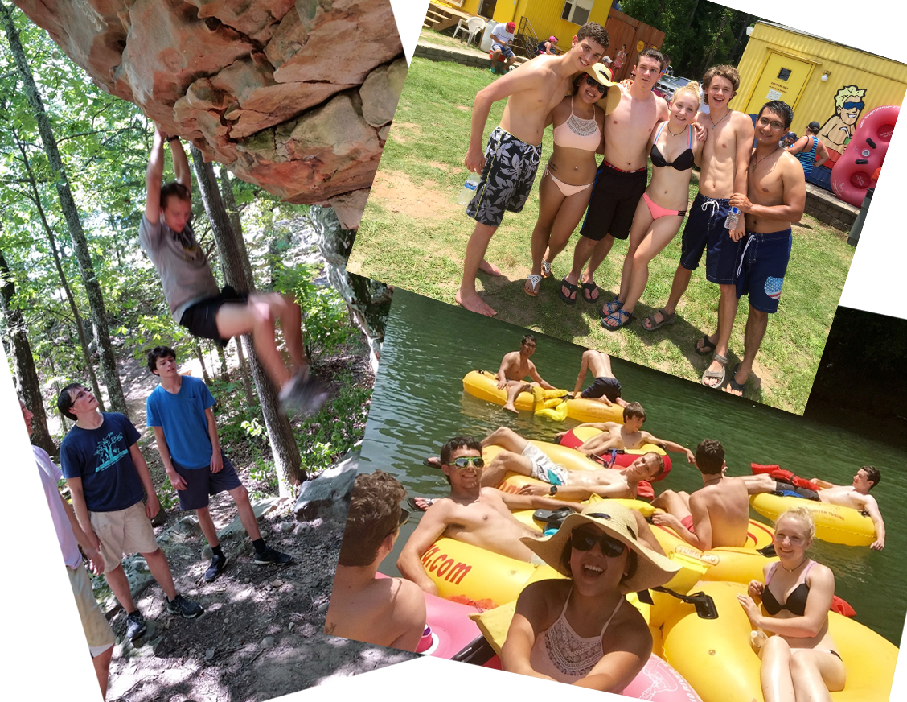

Our Mission
The members of Zeta Beta Tau Fraternity believe that the development of the individual as a responsible, mature member of society is the primary goal of the university today. The Fraternity offers to the university community a unique, desirable and successful means of achieving this goal. In fulfillment of these goals, we dedicate ourselves to the principles of intellectual awareness, social responsibility, integrity, and brotherly love.
Our Brotherhood
The driving power behind ZBT is its brotherhood. The Xi Chapter brotherhood has a strong background. Today, the Xi Chapter is undergoing a surge of growth. Each semester, as we accept new men into our brotherhood, we become even stronger. The experiences of brotherhood are not enumerable. The brotherhood is a group of quality gentlemen who, through the execution of our mission, serve as a Powerhouse of Excellence. The improvement of our character by the brotherhood allows us to share a bond unlike any simple friendship. In joining the Xi Chapter brotherhood you join a national brotherhood of over 110,000 members established at over 80 campus locations. This brotherhood lasts forever.
Our Service
As a part of our mission, ZBT seeks to reach out to its community and help others. The Xi Chapter participates in many community service projects, fundraisers, and philanthropy. The ZBT official charity is the Children's Miracle Network. In addition to our own efforts to impact the community positively, ZBT brothers actively participate in many philanthropic events across campus. A few favorites are Dance Marathon (as this raises money for Children's Miracle Network), Run for Roses, Red Cross blood drives, and others.
Our Academics
As a part of ZBT, brothers are held to high academic standards. Our brothers are here for the primary reason of getting an education. Georgia Tech, as a fine institute of higher learning, provides a quality but challenging education. The success of our brothers academically is enhanced by the existence of brotherhood. The fraternity includes a rigorous academic plan that includes GPA standards, mandatory study hours, grade oversight, online test study guides, and more.

Our Fun
College life can be tough. Everyone needs a break from time to time. Besides the day to day fun brothers have, ZBT hosts many social events every semester. Every week the brothers attend Rocky Mountain Pizza for Trivia Night (where we often dominate). At least twice a year, ZBT has a Date Night. Multiple parties are held each semester too. Be sure to check our site for information on upcoming events as many are open invitation.
Our History
ZBT was inspired by Richard J. H. Gottheil of Columbia University in 1898 as a society of New York City area Jewish students. During this time, ZBT served as a fraternal body of college students who, as Jews, were excluded from joining existing fraternities because of sectarian practices. In 1903, however, ZBT became the Greek-letter fraternity, Zeta Beta Tau. And in 1954 ZBT eliminated sectarian practices entirely. Furthermore, in the next decade Phi Alph, Phi Sigma Delta, Kappa Nu, and Phi Epsilon Pi fraternities merged into Zeta Beta Tau. In 1989, ZBT eliminated its pledging in its initiation process in an effort to eliminate hazing. The Georgia Tech chapter of Zeta Beta Tau Fraternity, Xi Chapter, was founded in 1916. Notable ZBT alumni include Jack Warner (Warner Bros), Henry and Richard Bloch (H&R Bloch), Samuel Rosen (20th Century Fox chairman), Alan Cohn (president of New York Nicks and New York Rangers), Arthur Goldberg (supreme court justice, ambassador to the UN), Steven Trachtenburg (president George Washington University), and Lawrence Bacow (president Tufts University).